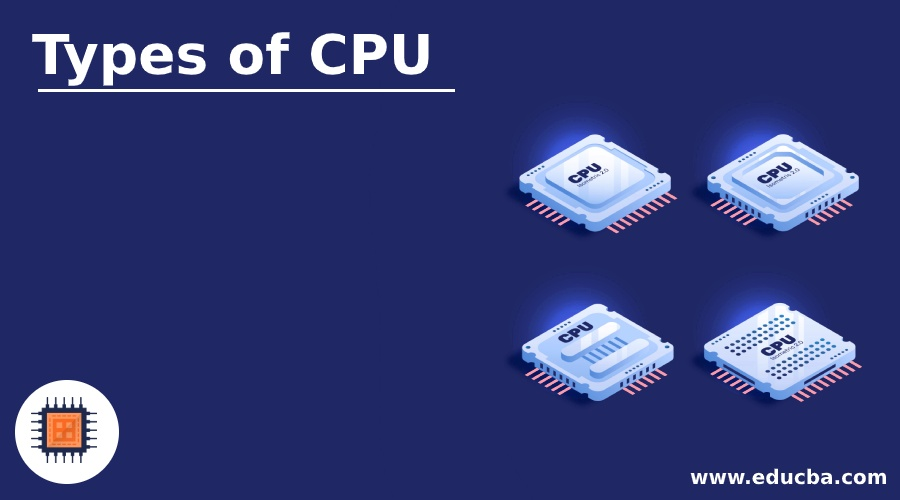
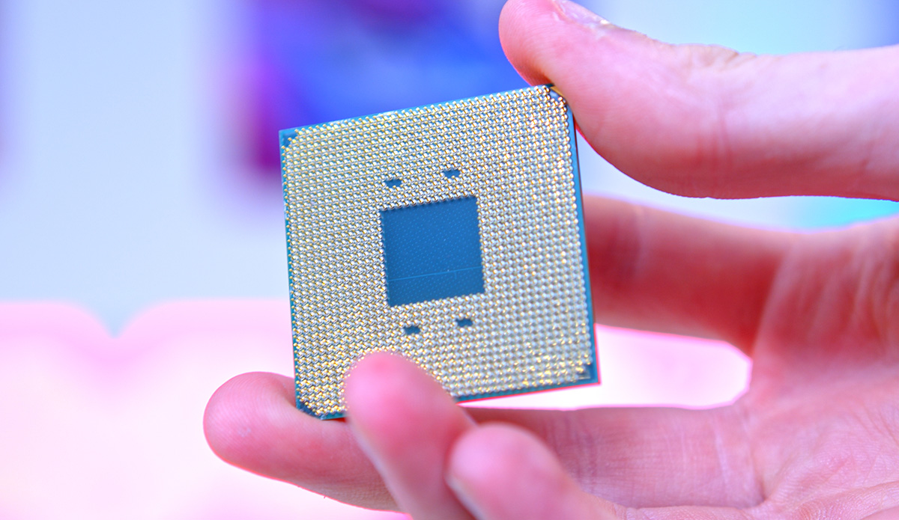

Central Processing Unit (CPU)

The CPU, often referred to as the "brain" of the computer, handles all the instructions from programs and applications running on a computer. It performs the basic arithmetic, logic, control, and input/output operations specified by the instructions in the software.
Key Features of a CPU
- Clock Speed: Measured in GHz, it determines how many cycles the CPU can perform per second.
- Core Count: CPUs can have multiple cores, allowing them to process multiple instructions simultaneously.
- Cache: High-speed memory inside the CPU that stores frequently used data for faster access.
Types of CPUs
Different types of CPUs are designed to meet various computing needs. Depending on the performance required, users may choose between:
- Desktop CPUs: Typically designed for home and office use, offering balanced performance and power efficiency.
- Mobile CPUs: Built for laptops, providing lower power consumption and extended battery life.
- Server CPUs: Engineered for servers with higher core counts and enhanced multi-threading capabilities for data centers.
Why is the CPU Important?
The CPU's role is vital in determining the overall speed and efficiency of your computer. A powerful CPU allows for faster processing times, better multitasking capabilities, and smooth performance in demanding applications such as video editing, gaming, and scientific computations.
- Improves application performance
- Supports complex calculations and simulations
- Enables efficient multitasking
CPU Specifications
| Specification | Value |
|---|---|
| Clock Speed | 3.5 GHz |
| Cores | 8 |
| Cache | 16 MB |
| Socket Type | LGA 1200 |
| TDP | 95 W |
Additional Information
Here are some additional tips and resources to learn more about CPUs and their role in computing.
- Overclocking
- Overclocking refers to increasing the clock speed of a CPU beyond the manufacturer's specifications to achieve better performance. This process can boost performance in CPU-intensive tasks but comes with increased heat generation and potential risks to the hardware.
- Multi-core Processing
- Modern CPUs come with multiple cores, allowing them to perform multiple tasks at once. More cores generally mean better performance in multi-threaded applications such as video editing, rendering, and high-end gaming.
- Thermal Management
- CPUs generate heat during operation. Efficient cooling solutions, such as heat sinks and fans, are essential to prevent overheating and ensure optimal performance.
For more information about processors and computing, visit Intel’s Processor Guide.